Recently I have gotten into the habit of going for a run. It took a while to make it a routine but it became the most liberating part of the day for me. I have run on a treadmill at my office gym for about 3-4 months but nothing even comes close to running on ground. This experience gave me some bragging rights, so here's a log of what I have learnt over the months which could be useful for anyone starting off.
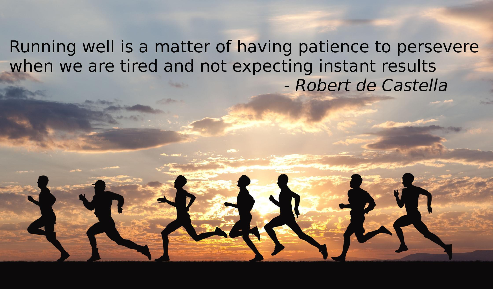
♦ Persevere - It can take about four to six weeks to develop a running habit, so it does take some perseverance to make your new running habit stick.
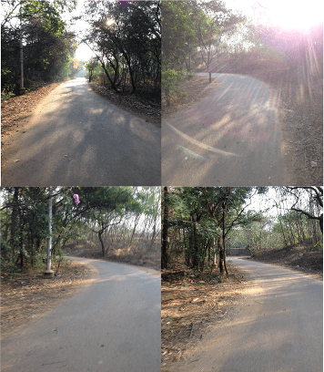
♦ Find a track or trail - Find a track which is comfortable for you so you don't need to think and let your subconcious memory guide you. If you are shy, start off on a more isolated stretch. You can vary the track once you are more acclimatized. For me personally, IISc, Bangalore has been a heaven to run in the natural environment. There is a mix of gradients, curves and straight paths surrounded by unpolluted nature. Adjoining are some images of the picturesque road at IISc that I take to run!
♦ Get the right shoe - No two people are created alike and so are running styles and feet. Check your feet arch types using the wet feet test to get an idea of how your feet support the position of your running. The second thing is understand your pronation which is the way the foot rolls inward when you walk and run. Use this to get the right fit shoe for you which could be either a cushioned shoe, stability shoe, motion control shoe using the below guide matrix.
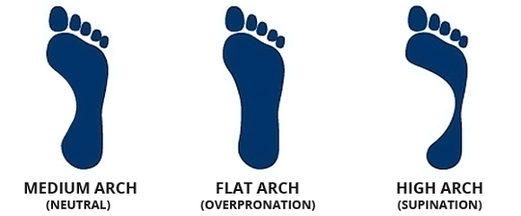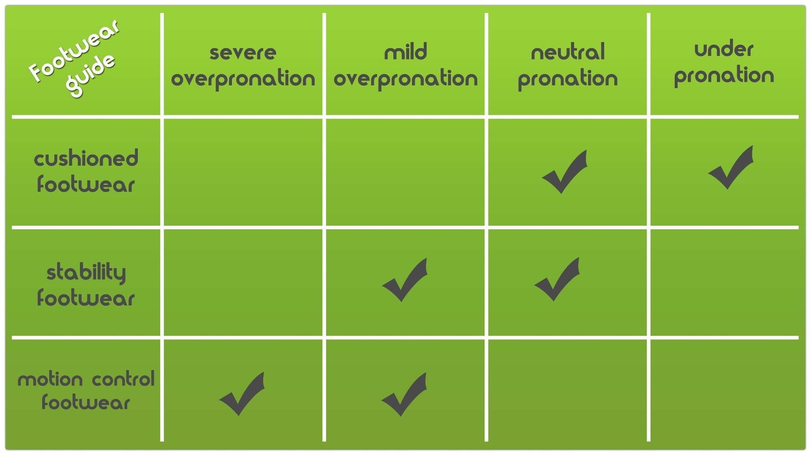
♦ Treadmill is boring - If you have run on a treadmill for a while, you would have built stamina but running on ground could feel altogether different as there is a no feedback like you get on the belt. You have to push back to move forward which can tire you out faster. Moreover what's the fun running in a closed room without scenery passing you by and something to take your mind off the blinking lights in front of you. Plus you don't learn how to pace based on your instincts on a treadmill because of the "set it and forget it" attitude.
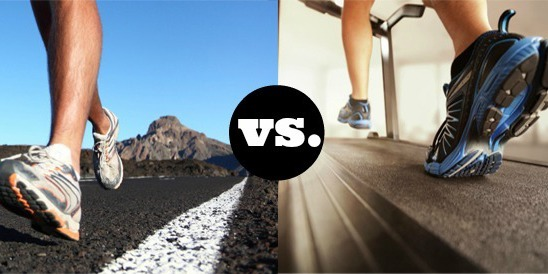
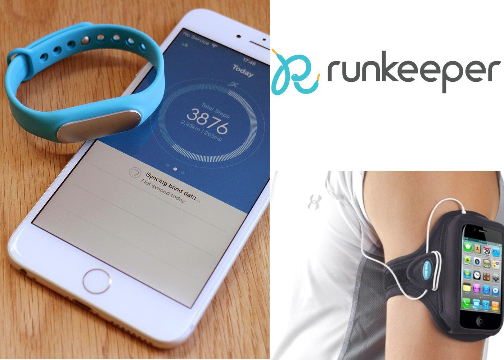
♦ Keep a run record - It's always good to track your run and admire your achievements. Modern smartphones and wearables have a plethora of options to track your run everyday and to keep pushing yourself to do better. Use them to track your progress and stay accountable. I am currently using Mi Band to track my runs. It's quite basic but light, affordable, IP67 dust and water resistant and has enough features to envy a high end fitness tracker. It lacks GPS and hence uses footsteps to approximate the distance. It can differentiate between a run and walk and also tracks my sleeping pattern. The other option I have tried is using RunKeeper app on my iPhone and strapping it on using an armband but it turned out a little too bulky and unfcomfortable although it had the advantage of doubling up as a music player.
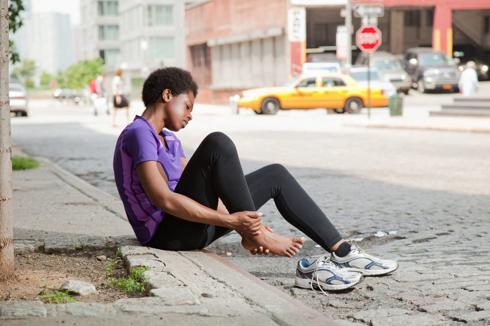
♦ Don't overdo it - Running too much too soon is one of the easiest ways to get injured. When you first start running, focus on increasing your mileage gradually. Don't run every day. You may even want to start out doing a run-walk. Alternate running with swimming and cycling to build your other muscles and improve your breathing. This has worked wonders for me as it allows my running muscles to relax and heal the niggles I picked up on my running day.
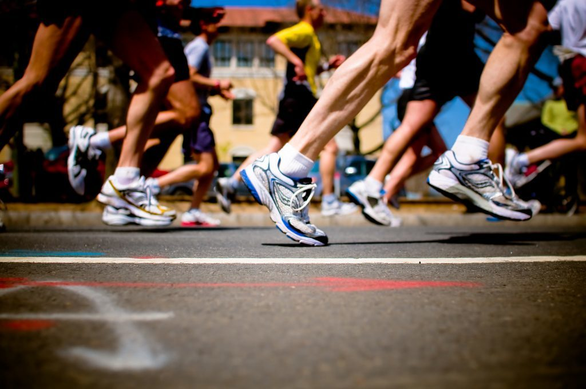
♦ Train for a marathon or a race - Training for marathon or a race is a great way to stay motivated. Enlist in a marathon in your local area and train for it. IndiaRunning has all upcoming dates and links to register. I will be running at the Bangalore TCS World 10k Procam Run 2016. If you are running as well, comment below. Let's meet up!
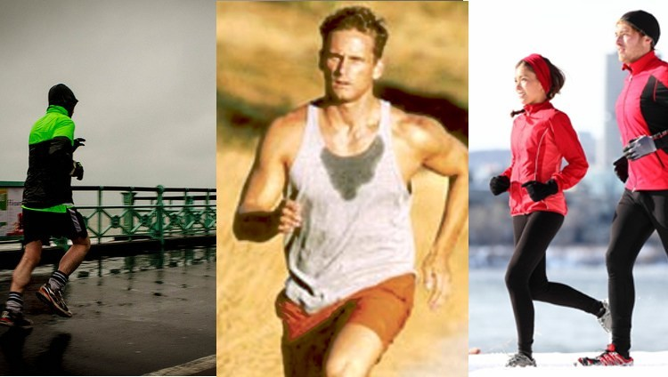
♦ Don't stop for bad weather - Don't excuse yourself not to run on a rainy, hot or cold weather day. Plan for the upcoming season with the proper attire and safety precautions if necessary.
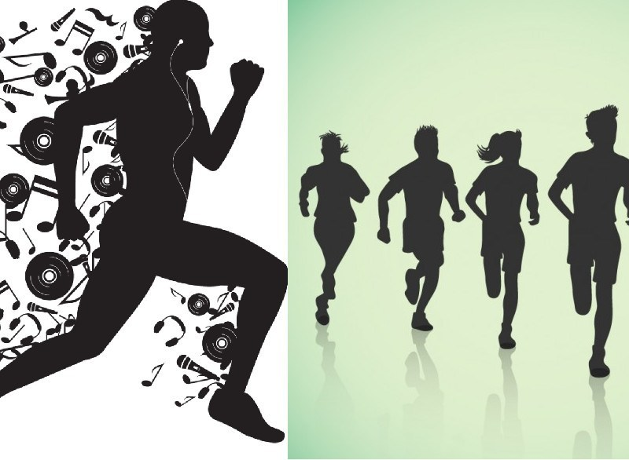
♦ Beat Boredom - Once you are set into a running routine don't let boredom creep in. Find your fellow runners, try listening to music, vary your route. The most simple thing that works is if you are running in a closed loop is running anti-clockwise if you were running clockwise before. From my personal experience, buying new earphones for the purpose of running is completely useless. Use the ones you are most comfortable with and if they fall out while jogging just wrap them around the back of your ear, tuck the cord in your shirt and you're golden!
Finally and most importantly ENJOY YOUR RUN!!
Below is a pic of me after completing a short 4k run at IISc - Jan 26th 2016. More to come!
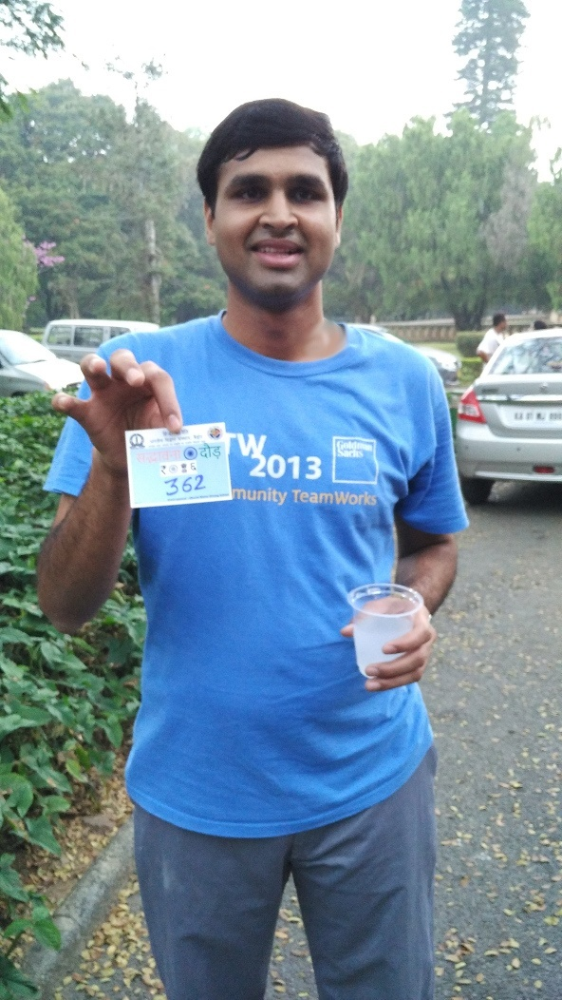
← Back to Blogs
All about Running and Jogging - Shoes, Trackers, tips and more
adarshpatil
10th March 2016
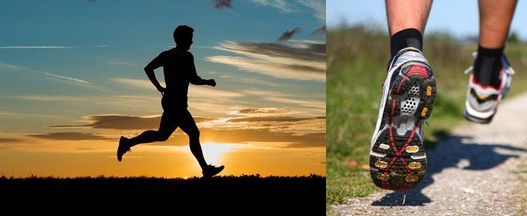